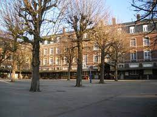

"Rouen : une nouvelle manifestation contre le pass sanitaire rassemble des milliers de personnes" Ce samedi 27 février, des milliers de personnes ont défilé dans les rues de Rouen pour protester contre l'extension du pass sanitaire. Cette mobilisation, qui s'inscrit dans un mouvement national, a réuni des citoyens, des syndicats et des partis politiques, dans un contexte de tensions et de débats autour des mesures sanitaires imposées pour lutter contre la pandémie de Covid-19.
"Rouen : à la découverte des institutions qui font vivre la ville" Entre la mairie, le conseil régional, le conseil départemental, la préfecture ou encore les tribunaux, Rouen compte de nombreuses institutions qui assurent le fonctionnement de la ville et de la région Normandie. Mais qui sont ces institutions ? Comment travaillent-elles ? Quel est leur rôle ? Dans cet article, plongez dans les coulisses des institutions rouennaises pour mieux comprendre leur importance et leur contribution à la vie de la cité.
"Rouen : les multiples services offerts par la ville pour ses habitants" Que ce soit en matière de transports, de culture, de sport, d'urbanisme, d'environnement ou encore de solidarité, la ville de Rouen propose une grande variété de services à ses habitants. Mais connaissez-vous réellement tous ces services ? Dans cet article, découvrez les multiples offres mises à disposition par la municipalité rouennaise pour répondre aux besoins et aux attentes de tous les habitants de la ville.